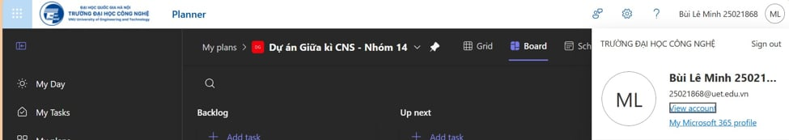
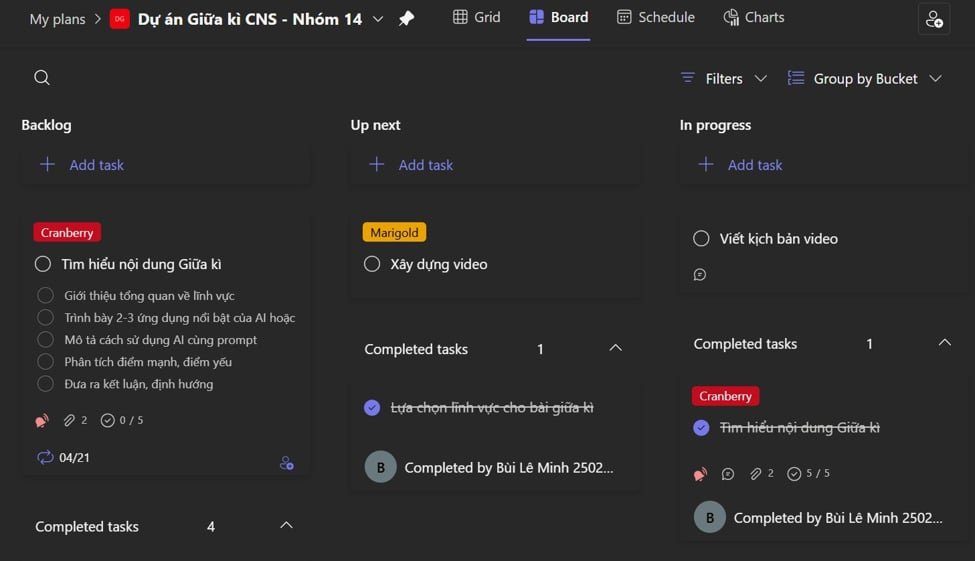
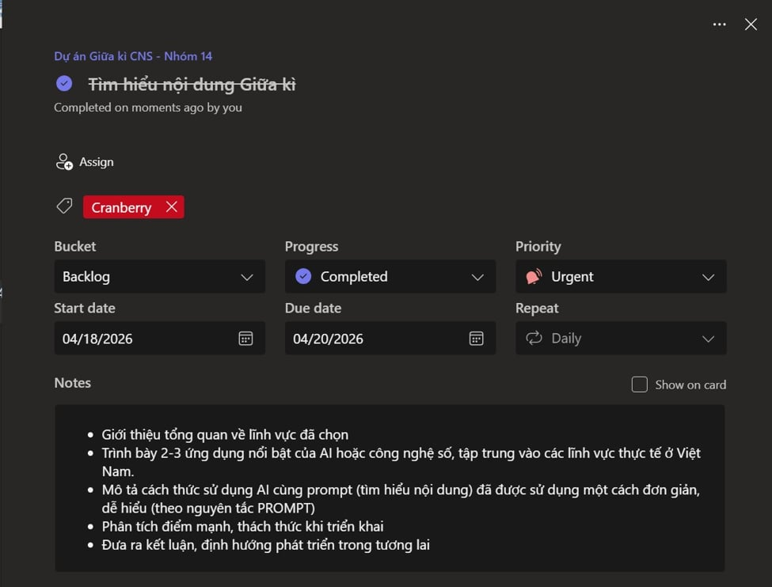
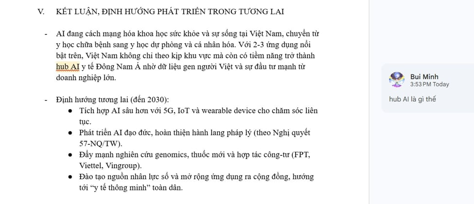
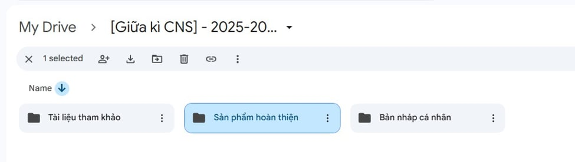
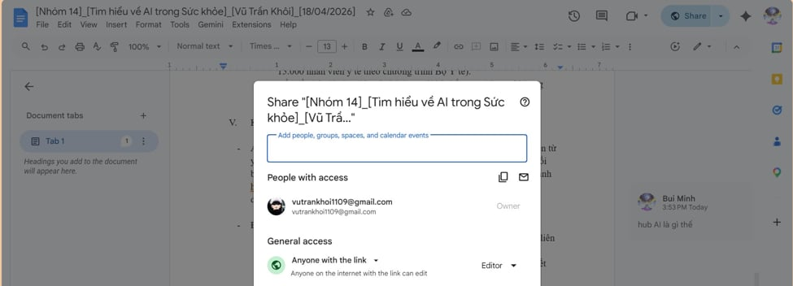
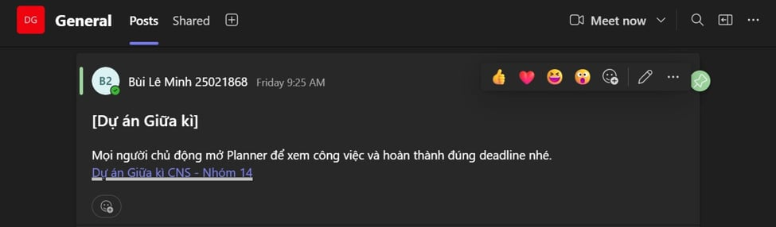

Trong bối cảnh làm việc hiện đại, khả năng sử dụng các công cụ hợp tác trực tuyến là yếu tố then chốt quyết định hiệu quả của một dự án nhóm. Trong một tuần triển khai dự án nhỏ vừa qua, cá nhân tôi đã tham gia với vai trò Trưởng nhóm, chịu trách nhiệm chính về quản lý, đốc thúc thành viên làm việc, và kiểm duyệt nội dung toàn diện.
Báo cáo này tập trung vào việc phân tích trải nghiệm cá nhân, cách thức thiết lập và tối ưu hóa các công cụ kỹ thuật số để phục vụ mục tiêu chung của nhóm. Các công cụ chiến lược được tôi lựa chọn bao gồm:
Để xây dựng môi trường làm việc số chuẩn mực và minh bạch, tôi đã thực hiện cập nhật đồng bộ hồ sơ cá nhân (Profile bao gồm ảnh chân dung và họ tên đầy đủ) trên cả 4 nền tảng tương tác. Việc đồng nhất thông tin định danh này giúp các thành viên trong nhóm dễ dàng nhận diện và tag (gắn thẻ) trực tiếp tên tôi trong các phiên thảo luận hoặc phân định trách nhiệm công việc, tránh tối đa tình trạng nhầm lẫn với các tài khoản cá nhân ngoài học tập.

Thay vì chỉ áp dụng các tính năng cơ bản, tôi đã chủ động thiết lập hệ thống phân loại thông minh qua cấu trúc Labels (Nhãn màu sắc) trong Microsoft Planner nhằm gom nhóm và quản trị công việc sát sao theo các cấp độ ưu tiên:
Bên cạnh đó, tôi thực hiện tối ưu hóa liên kết chéo cấu trúc dữ liệu bằng phương thức đính kèm trực tiếp đường dẫn của các tệp văn bản Google Docs vào phân mục "Notes" hoặc "Attachments" của từng thẻ Task tương ứng trên bảng Planner, hỗ trợ việc truy xuất tài nguyên số chỉ với một cú click chuột đơn giản.

Tôi quản trị công việc độc lập của cá nhân thông qua mô hình Kanban trực quan trên Planner. Trong suốt tiến trình vận hành dự án kéo dài 1 tuần, tôi duy trì nghiêm ngặt tần suất cập nhật thực trạng công việc tối thiểu 3 lần mỗi tuần:

Trong không gian làm việc chung trên Google Docs, tôi không chỉ đảm trách viết nội dung cho phần việc của cá nhân mà còn chủ động đóng góp xây dựng hệ thống tài liệu chung bằng việc:

Hệ thống học liệu được thiết lập và phân bố một cách khoa học trên đám mây nhằm tối ưu hóa tính sẵn sàng cao của thông tin và ngăn ngừa rủi ro thất lạc tài nguyên dữ liệu.
Tôi đã quy hoạch không gian lưu trữ dự án trên Google Drive dưới dạng cấu trúc cây thư mục tối thiểu từ 2 cấp trở lên một cách tường minh:
[VNU1001]_[Nhóm 14] - Bài tập Giữa kì (2026)
100% tệp tin số do cá nhân tôi khởi tạo hoặc tải lên hệ thống lưu trữ đều tuân thủ chặt chẽ nguyên tắc định danh danh mục: [MãNhóm]_[Tên Tài Liệu]_[Họ Tên]_[Ngày Cập Nhật]. Phương pháp đặt tên nhất quán này hỗ trợ các thành viên định vị file cực kỳ nhanh chóng qua thanh công cụ tìm kiếm.
Đồng thời, tôi tiến hành cấu hình phân quyền truy cập dữ liệu (Share settings) chính xác theo vai trò làm việc:

Mô hình tích hợp nhịp nhàng giữa hệ sinh thái quản lý của Microsoft (Planner/Teams) và tính năng tối ưu sáng tạo nội dung của Google (Docs/Drive) mang đến sự minh bạch tuyệt đối về dòng chảy công việc. Giải pháp tổ chức phối hợp số này giúp cá nhân và tập thể tiết kiệm khoảng 30% quỹ thời gian hội họp trực tiếp do toàn bộ thông tin tiến độ, học liệu đã được hiển thị trực quan và cập nhật liên tục trên hệ thống.
| STT | Thách thức gặp phải | Giải pháp cá nhân đã thực hiện | Hiệu quả sau giải quyết |
|---|---|---|---|
| 1 | Quá tải luồng thông tin trên Microsoft Teams: Các hội thoại trao đổi liên tục xuất hiện khiến tôi có nguy cơ bỏ sót các thông báo trọng yếu liên quan đến Task. | Áp dụng tính năng "Pin" (Ghim) các kênh làm việc chủ chốt lên vị trí hàng đầu của bảng điều khiển; đồng thời cấu hình bộ lọc thông báo sang chế độ "Mentions only" để tập trung xử lý nhanh các đầu việc chỉ đích danh bản thân. | Giảm thiểu 50% thời gian phân loại tin nhắn nhiễu; kiểm soát tốt các mốc hạn chót quan trọng. |
| 2 | Xung đột chỉnh sửa dữ liệu trên Google Docs: Tình trạng nhiều nhân sự cùng đồng thời can thiệp sửa đổi cấu trúc câu chữ trong một phân đoạn dẫn đến chồng chéo, mất mát nội dung bài viết. | Chủ động thiết lập bảng phân chia khu vực tác nghiệp cụ thể ngay trang đầu tài liệu. Yêu cầu toàn nhóm chuyển đổi linh hoạt sang chế độ Suggesting (Đề xuất) thay cho việc sửa đổi trực tiếp khi muốn điều chỉnh ý tưởng của cộng sự. | Nội dung văn bản đạt tính nhất quán cao, chấm dứt hoàn toàn lỗi ghi đè dữ liệu; gia tăng sự tôn trọng lẫn nhau giữa các thành viên. |
| 3 | Sự bất đồng bộ hạ tầng giữa Microsoft và Google: Việc phân tách lưu trữ tệp tin bên Google Drive nhưng hội thoại giao tiếp trên Teams gây cản trở lớn cho công tác tra cứu nhanh. | Khởi tạo một tệp Docs mang vai trò "Resource Map" (Bản đồ tài nguyên số) tổng hợp đầy đủ sơ đồ liên kết của các thư mục Drive quan trọng, sau đó tiến hành tích hợp và Ghim cố định file này thành một Tab độc lập trên thanh công cụ của kênh Teams. | Toàn bộ thành viên chỉ mất từ 2 đến 3 giây để định vị nhanh bất kỳ tệp dữ liệu nào mà không phải rời khỏi không gian làm việc của Teams. |

Việc làm chủ và tối ưu hóa năng lực vận hành các công cụ hợp tác trực tuyến không đơn thuần dừng lại ở việc thành thạo cách sử dụng các tính năng kỹ thuật, mà điều cốt lõi nằm ở tư duy thiết kế, tổ chức tiến trình công việc khoa học cùng khả năng tương tác tích cực, văn minh với đồng đội trong không gian số. Thông qua dự án thực hành thực tế này, tôi đã rút ra các giá trị năng lực cốt lõi:
Những trải nghiệm thực tế quý báu này chính là bệ phóng năng lực số vững chắc giúp tôi sẵn sàng thích ứng tốt với môi trường làm việc cộng tác đa quốc gia trong tương lai.